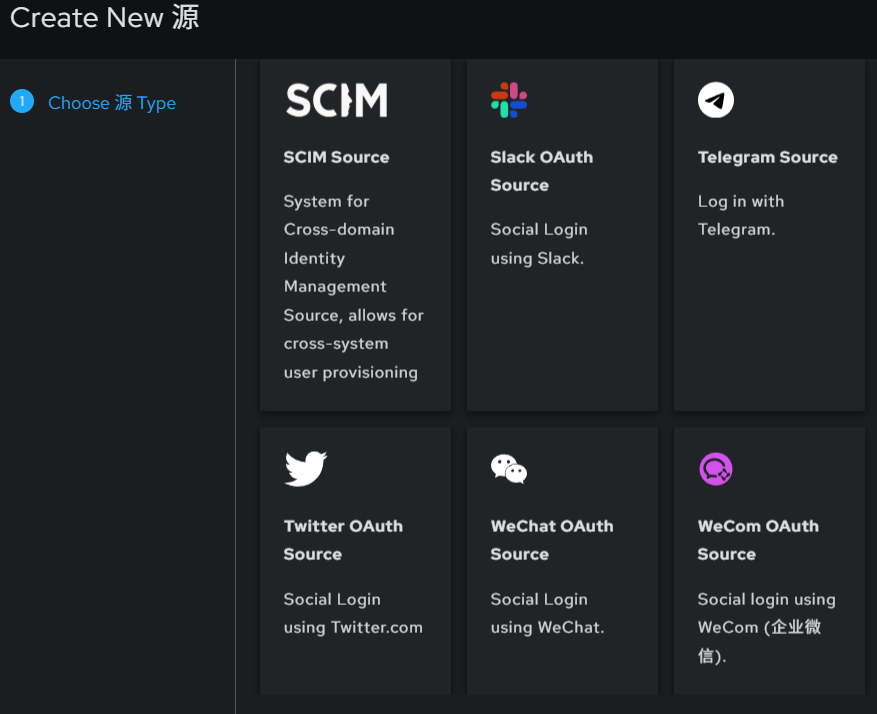
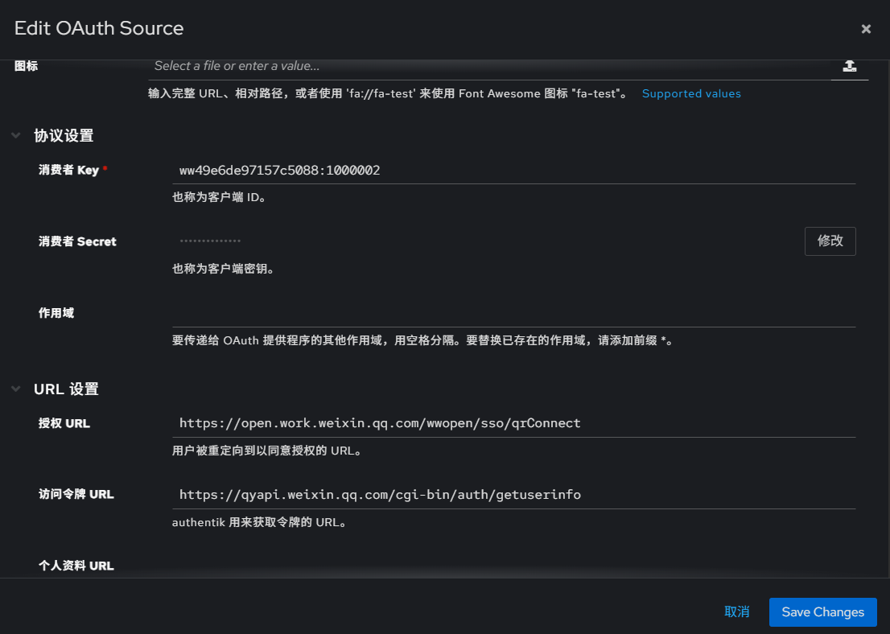
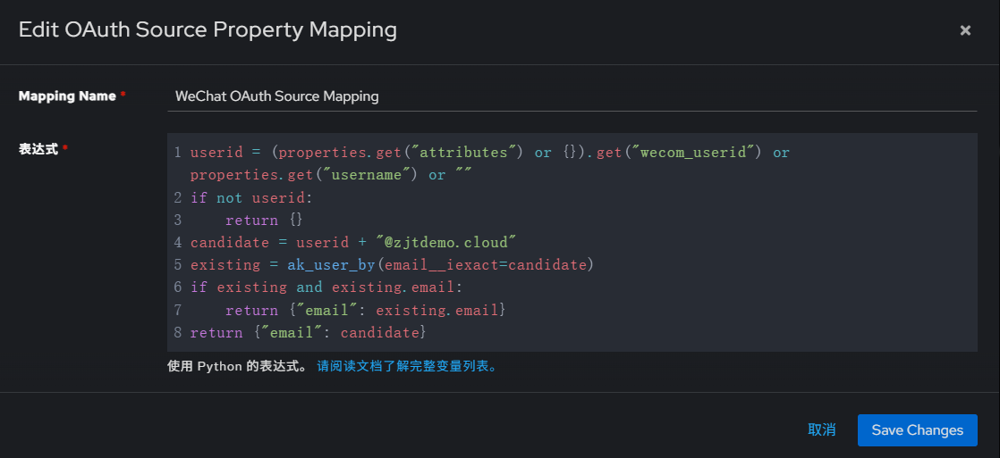
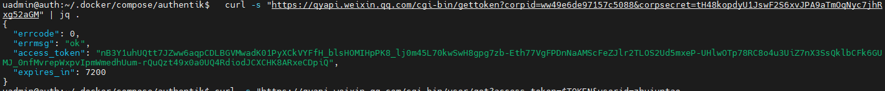
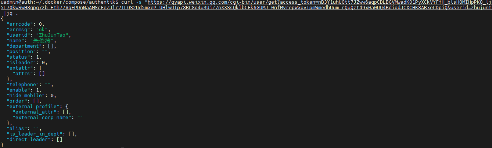

概述
为 Authentik 添加企业微信作为登录源，并解决一个关键问题：企业微信通讯录 API 只能拿到 userid，用户的邮箱字段需要在用户完成 OAuth 授权后才能获取。本文记录 Source 配置、属性映射脚本，以及通过接口验证字段获取情况的排障过程。
一、新增企业微信源
进入 Customization → Sources → Create，选择企业微信（WeCom）类型，按向导填写 CorpID、Secret 等凭据。保存后记录 Source 的 slug，用于拼回调 URL：
https://<authentik 域名>/source/oauth/callback/<slug>/
把该地址填入企业微信应用的可信域名与授权回调域。


部署/升级时按以下顺序执行脚本，避免因阶段未就绪导致配置失败：
./deploy.sh check
docker compose up -d
./deploy.sh prepare
./deploy.sh config
./deploy.sh enable
docker compose up -d --force-recreate server worker
./deploy.sh verify
二、新增属性映射
企业微信返回的 userid 与 authentik 用户的 email 并非天然对应，需要一个映射脚本把 userid 转成邮箱，并在已存在用户时复用其邮箱：
userid = (properties.get("attributes") or {}).get("wecom_userid") \
or properties.get("username") or ""
if not userid:
return {}
candidate = userid + "@zjtdemo.cloud"
existing = ak_user_by(email__iexact=candidate)
if existing and existing.email:
return {"email": existing.email}
return {"email": candidate}
进入 Customization → Property Mappings → Create，选择对应的 Source Mapping 类型，把上述表达式填入并保存，然后在 Source 的 Property mappings 中挂载它。

三、排障：为什么拿不到邮箱
现象：通过企业微信通讯录 API 查询用户，只能得到 userid，邮箱等字段为空。
原因：通讯录接口（user/get）的返回字段受应用授权范围限制；邮箱信息需要用户走一遍微信 OAuth 认证、在 App 上确认授权后才能拿到。因此不要依赖通讯录 API 补全邮箱，应确保登录流程中完成 OAuth 授权，并由上一节的属性映射脚本生成邮箱。
获取当前应用的 access_token：
curl -s "https://qyapi.weixin.qq.com/cgi-bin/gettoken?corpid=$CORPID&corpsecret=$CONTACT_SECRET" | jq .

用 token 查询指定用户：
curl -s "https://qyapi.weixin.qq.com/cgi-bin/user/get?access_token=$TOKEN&userid=$USERID" | jq .

对比两次返回的字段即可确认：仅在用户完成 OAuth 授权后，email 才会出现在结果中。
四、常见检查项
- 回调域名是否已加入企业微信应用的可信域名列表。
- Source 是否已加入
default-authentication-identification的 Selected Sources。 - 属性映射是否已挂载，且用户邮箱不为空——邮箱为空会导致后续基于 email 的账号关联失败。
附件下载
- wecom.zip — 本文配套部署包，含企业微信集成脚本（wecom.py、apps.py、deploy.sh、diagnose_wecom.py 等）
本文由 WorkBuddy AI 编辑整理。